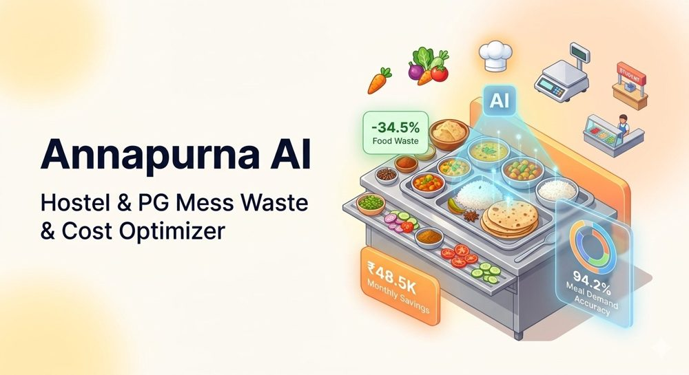
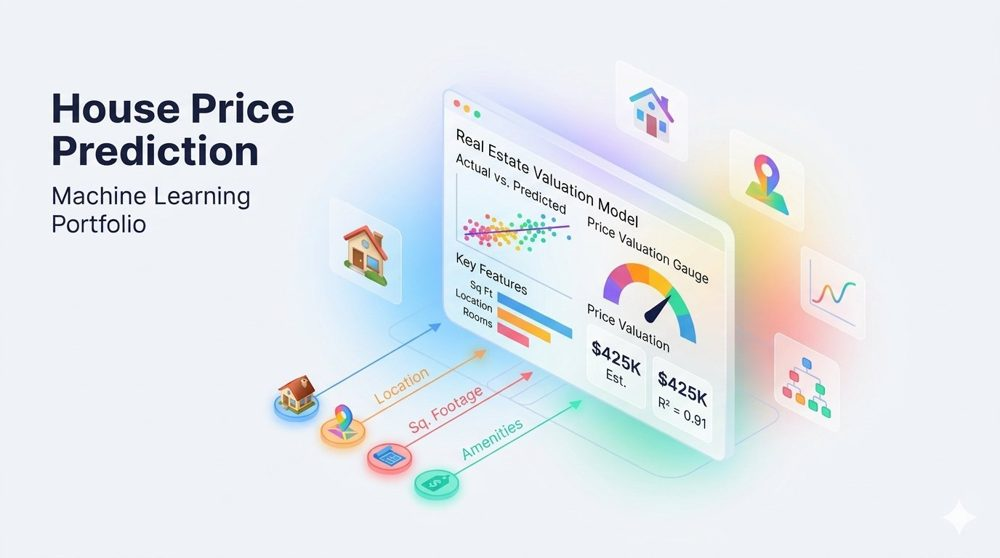

Annapurna AI — Hostel & PG Mess Waste & Cost Optimizer
An end-to-end data science and machine learning system that tells a hostel cook how much food to cook, so less food is wasted.
PythonNode.jsMachine LearningJavaScript
View project →“Building intelligent systems. Accelerating computation. Solving real-world problems.”
Aspiring Software Engineer | Data Science | Machine Learning. I am a Computer Science Engineering graduate with an interest in software development, data science, machine learning and high-performance computing. I enjoy solving practical problems through programming, experimentation and data-driven approaches.
I am a Computer Science Engineering graduate who enjoys turning practical problems into working software. My interests are software development, data science, machine learning and high-performance computing. I learn by building: from a GPU research project at NISER to an end-to-end machine learning system for hostel kitchens.
B.Tech, Computer Science & Engineering (2022–2026), KMBB College of Engineering and Technology. CGPA 8.04/10.
Research Intern at NISER. Co-author of a paper on GPU-accelerated Tensor Train decomposition (50× faster, 2× less memory).
Python, SQL, CUDA, Pandas, Scikit-learn, XGBoost, Power BI, Git and Jupyter.
Bhubaneswar, India. I speak English, Hindi and Odia.
Research Intern, National Institute of Science Education and Research (NISER)
A big multi-dimensional array (tensor) is compressed into a chain of small cores. This is the idea behind my NISER research.
Click any project to open its full details page. Code is available on my GitHub profile.

An end-to-end data science and machine learning system that tells a hostel cook how much food to cook, so less food is wasted.

Predicts house prices from 80+ property features using regression models, with an R² of 0.89 on test data.

Identifies telecom customers who may leave so retention can be targeted early. 88% ROC-AUC on 7,000+ records.
Finds where a retailer loses profit using exploratory analysis on 10,000+ rows and a Power BI dashboard.
A Flask web app for exploring stock price trends and performance with interactive Plotly charts.
Problem-solving and analytical thinking · Team collaboration and communication · Adaptability · Continuous learning
Languages: English · Hindi · Odia
📍 Bhubaneswar, India
✉️ archanapujahari26@gmail.com
📞 +91 9556391136